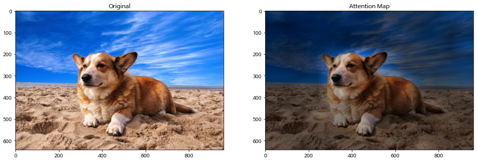
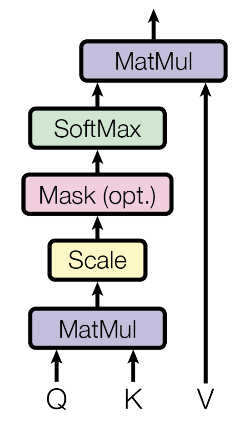
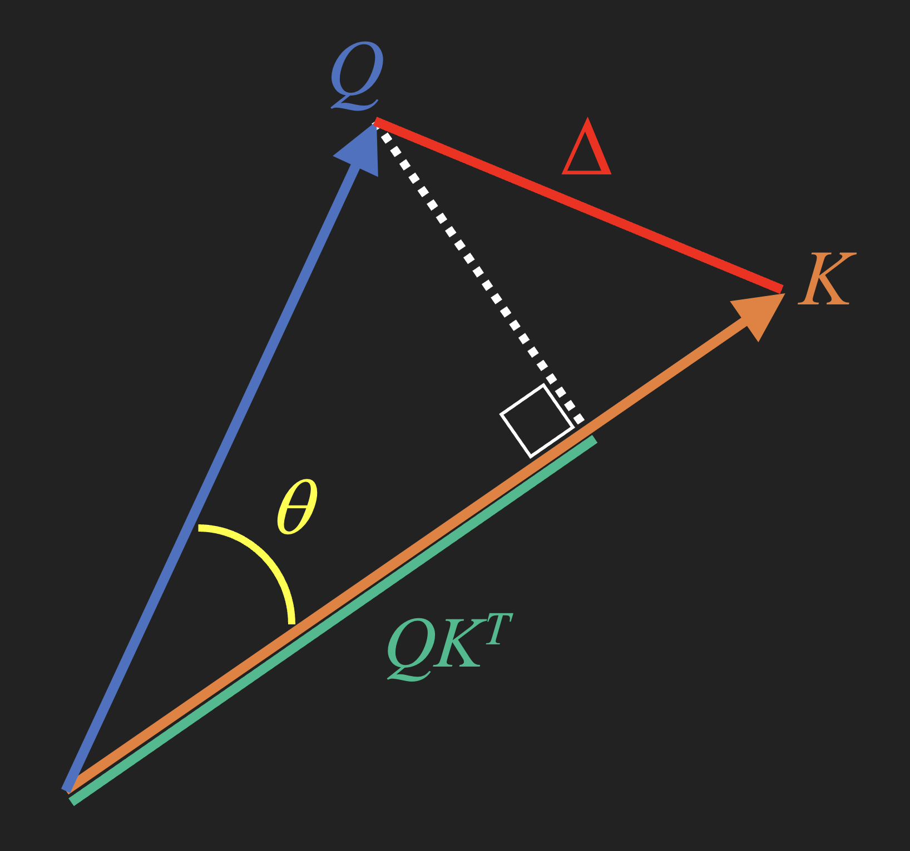

If you can get this one thing, the rest will make sense.
nlp
architectures
Author
Scott H. Hawley
Published
August 21, 2023
(GIF animation, zooming in on Attention part of Transformer model diagram)
1 Preface
“Attention is All You Need” (hereafter AIAYN) is the name of the 2017 paper [1] that introduced Transformer models, a neural network architecture that eventually “took over” as the preferred architecture for many machine learning tasks, with models such a BERT and the GPT series (“#ChatGPT” - for this blog’s SEO) becoming “foundation” models upon which further systems continue to be built.
Yet I found the multiplicity of Transformers’ “moving parts” to be daunting, and this hindered my numerous, ardent attempts at studying them – see the References in Section 8 for a list of all the papers, tutorials, and videos I consumed over the years. Many of these treatments do little to reduce the complexity, and thus the simplicity of the original paper’s title is often lost.
This is partly because Attention isn’t really “all you need,” and it’s a bit of a joke to pair the title with such a complex model diagram like the one shown in the GIF image above. However, I’ve come to see the Attention mechanism as the key piece, the central mechanism, for which everything else is (pretty much) just an add-on.
An Analogy
I liken this to rocketry: whether you’re talking about model rockets or Saturn Vs, the essential part is the engine which uses a chemical reaction to produce thrust, yet you still need to add on stabilizing fins and a cone for aerodynamics, etc. And if you really want to lift heavy payloads then you’ll need all kinds of auxiliary systems to regulate fuel flow and control systems for stability. But if you want to understand a Saturn V (I don’t, but I’d imagine…) you wouldn’t start by listing all the different systems and go over them one by one, rather you’d start from the basic idea and then go into why these other pieces were added on. Such is how I’m recommending that we approach Transformer models.
Things finally “clicked” for me this summer – years later! What finally helped was watching Andrej Karpathy’s excellent YouTube tutorial [2] for the second time, when I noticed he homed in on the Attention part of the model and explained it as being a weighted average of words. I believe that if you grasp that central part, then all the other parts of the Transformer can be regarded as “bells and whistles” that help it work better.
Note
Throughout this tutorial I will highlight key ideas with the phrase “Attention is just…” to share different perspectives that have helped me understand.
In most places below, the code is hidden by default (behind “> Show the code” expanders) because I don’t want you getting distracted by how I made certain figures; the point is the figure, not the code. This lesson is intended to be “coding-free”!
2 Building Intuition
Certain parts of an input hold greater significance than others. Take, for instance, when you observe an image, your attention is likely drawn to objects in the foreground rather than the background. In the following picture, the dog, for instance, captures the attention of most people (and AI systems!):

Figure 1. Example of attention being given to a foreground object, like this cute doggy! In the image on the right, the background is darkened compared to the foreground, indicating that the foreground is receiving more attention than the background. (Source: Eunkwang Jeon, ViT-pytorch)
Alternatively, when you’re reading or listening to someone speaking, certain words carry more weight than others and contribute differently to the meaning formed in your mind. Consider the following sentence:
“Please go to the store and get some milk.”
If you’re trying understand the command being given, the words “go”, “store”, “get”, and “milk” probably matter the most to you. If what you’re interested in is the tone (e.g. “is the speaker being polite?”) then probably the “Please” would matter most.
Since the topic of Attention often comes up in the context of Natural Language Processing (NLP), we’ll stick to text for this lesson, but know that “Vision Transformers” for image processing are definitely a thing [3].
Key Idea
Attention is just a way to give certain parts of an input more weight than others.
2.1 Weighted Averages
On computers, the way we often emphasize certain parts of an array more than others is to multiply them by another array that has the “weights” to be assigned. In some other contexts, the “weights” array may be also called a “mask”, such as a “hard mask” of 1’s and 0’s to turn on or off parts of the array, or a “soft mask” with floating-point values to emphasize certain elements.
Key Idea
Attention is just a soft mask.
Let’s use the sample sentence above, and make up some mask weights to stress the relative importants of different words. We’ll display the weight values with a colored background to visualize their magnitude (darker = more weight):
Show the code
import numpy as np import pandas as pd from IPython.display import HTML, displayinput="Please go to the store and get some milk"words =input.split()mask = np.array([0.5,.9,0.1, 0.01, .7, 0.1,.98,0.1,.99])df = pd.DataFrame({"word":words,"weight":mask})display(df.set_index('word').T.style.background_gradient(vmin=0, vmax=1).format(precision=3).hide())print(f"Sum of mask weights = {mask.sum():.3g}")
Please
go
to
the
store
and
get
some
milk
0.500
0.900
0.100
0.010
0.700
0.100
0.980
0.100
0.990
Sum of mask weights = 4.38
Tip
In the above example, I made up a weight of nearly zero for “the” because it really doesn’t matter. The meaning of the sentence would still be unambiguous without “the”. We’ll use this trick of setting some weights to zero later on when we talk about “Masked Attention” for the Decoder part of the Transformer.
We’ll make it so that the weights all add up to one. If all \(N\) words were weighted equally, the weight values would all be \(1/N\). For other weighting schemes, we divide the mask weights by their sum to get our attention weights. For the example sentence above, dividing by the sum gives us:
Now, the words themselves will each be represented by an array of numbers we call a “word vector”. Usually, word vectors are viewed as living in some high-dimensional space given by 256, 512, or even 1024 numbers. When we combine the word vectors we get a “context vector”, and the contributions of the word vectors will be weighted appropriately. These weights are literally the attention. To put it differently:
Key Idea
Attention is just a weighted average of inputs.
So how should we actually get those weights – how should they be determined? That’s what we’ll cover for the rest of this lesson. Firstly, it helps if we understand the context of something called “context vectors.”
3 Historical “Context”
There are a few different attention-like schemes that have arisen over the years. The cleanest starting point for our lesson is the work of Bahdanau et al [4] who were making improvements to automated language translation models that at the time were using an architecture called a Recurrent Neural Network (RNN, which you don’t need to understand for this lesson, or the fact that specific flavor of RNN was called an LSTM which stood for Long Short-Term Memory).
At issue was traditional models’ management of the “context vector” of numbers that would store the “meaning” of the text as it was being processed. You can think of the context vector as being like the “state” of the machine as it works through the text.
The simplest context vector is just the average of the word vectors making up the sentence. This method is called “Bag of Words”. There’s a lot you can do with a Bag of Words model. If we were to weight certain words more than others – say using Attention – then we’d have an even better model.
Key Idea
Attention is just a weighted Bag of Words.
Note that a Bag of Words doesn’t take into account word ordering. For example, on the outdoor tables at the coffee shop where I’m working, Bongo Java in Nashville, TN, there are signs that would mean something very different if the word “outside” were moved to the end of the sentence:
Bongo Java image: “Please no outside food or drink” != “Please no food or drink outside.” This is on an outdoor table where the owners clearly expect you to be eating, so only the first sentence makes sense in this case. A Bag of Words model would incorrectly treat those two sentences equivalently.
To get a sense of word ordering, we’ll need another part of the Transfomer model called Positional Encoding, which we mention in Section 6.
4 Making Attention Mathematical
We’ll start by showing the full formula for the Attention mechanism in Transformer models, and then we’ll unpack that to explain what its parts are and why they are there.
The set of attention weights \(A\) – the ones used in the weighted average – are given by
\[ A = {\rm softmax}\left( Q K^T \over \sqrt{d_k} \right). \tag{1}\] We then multiply these by the input values \(V\) to get the context \(C = A V\). Or, putting these together in the form that appears in the original AIAYN paper,
Here’s the diagram from the AIAYN paper illustrating this process :

Figure 2. (Mouse-over or press to expand.) Attention computation diagram from AIAYN paper [1]. “MatMul” = “matrix multiplication” or what we’ll also call a “dot product”, which includes summation (which given our normalized weights means we get a weighted average).
So then, what is softmax, what are Q and K, and what’s that square root doing in the denominator? In what follows, we’re going to emphasize the intuitive understanding of what’s going on and why. (If you’re satisfied to know the “is” without the “why,” then this tutorial is probably not for you.)
4.0.1 What is Softmax?
Softmax is a normalized element-wise exponential function that operates on a vector (i.e. an array) of data \(\vec{x}\) by the following equation:
\[ {\rm softmax}(\vec{x})_i = {e^{x_i} \over \sum_i e^{x_i}} \] where \(x_i\) are the individual elements (i.e., components) of \(\vec{x}\). Usually one sees softmax used as the final output of a classifier or recommendation system, and indeed the final stage of the Transfomer’s Decoder is a softmax function.
Why is softmax appearing in the Attention calculation? Well, we could use something else, but softmax a great choice! ;-) What we need for our attention weights is a set of positive numbers that add up to 1 (what I call “parts of a whole” and what mathematicians call a “[probability] distribution”). Usually the \(x_i\) values can be positive or negative, so we need some function to map from sets of arbitrary real numbers to our weights that are “parts of a whole.” (Mathematicians call such functions “distribution-generating functions.”) We could choose some other function instead of softmax to do the job we need – say, something monotonic and positive like a sigmoid function – but softmax is arguably the best choice for a distribution generator because…
other functions may be slower computationally
people are already accustomed to using softmax for other things
it’s got some sweet properties in terms of both probability theory and calculus
and it’s hella versatile – see the interactive Appendix “Fun With Softmax” aka Section 9.
4.1 What are Q, K, & V?
Literally, these stand for “Query,” “Key,” and “Value,” respectively. We already mentioned the value \(V\) as the “inputs” that are being attended. Note: these “inputs” could be actual data points, or just the outputs from a previous layer in the (stacked) Transformer architecture.
“Query” and “Key” are typically described in terms of search algorithms, with \(Q\) being “what am I looking for?” and \(K\) being, say, the keywords or metadata associated with the “actual” value \(V\). For example, if you’re searching on YouTube for videos, you’re not searching the videos themselves, you’re searching over metadata/“keys” about those videos, and then the values of the actual, corresponding videos are served up.
Buuuuut…in the context of Transformer models, I tend to find the “search” analogy to be lacking…or at least it can be an impediment to my understanding. So I’ll say it this way: \(Q\) is usually the “current state of the machine,” such as the context vector describing the preceding words so that we can predict the next word.
In the simplest implementations \(K\) is exactly the same as \(V\). Like, literally \(K\)=\(V\) can work in many cases. We’re not going to do that, but just to say, it can be done. Instead we’ll say that \(K\) is an “alternate reduced-dimensional embedding of the embedding of \(V\),” meaning that typically \(Q, K,\) and \(V\) are usually not the vectors themselves but rather the result of a remapping by a (typically) single-layer neural network which adds a little extra expressiveness to the model and which could also be used to project these vectors into some new space with a different (reduced) number of dimensions which is called \(d_k\).
One more thing: we’ve been saying “vectors” but technically \(Q, K,\) and \(V\) are matrices consisting of multiple vectors stacked up in rows to form a “batch” that allows us to take advantage of the parallel-processing capabilities of GPUs. In our discussion, the matrix nature doesn’t really affect anything. (If you like, you might think of the vector version as a matrix with a batch size of 1.)
4.2 Similarity and its Measures
The thing that goes inside the parentheses of the softmax function is something that measures the similarity between the query \(Q\) and the key \(K\). Treating these as vectors, we have a few choices that I’ll show on a diagram:

Figure 3. Diagram illustrating a few similarity measures for vectors \(Q\) and \(K\).
Our options for measuring similarity include the following 3, the last of which is what the Transformer’s Attention uses:
4.2.1Euclidean Distance: \(\Delta\)
This is just what you think: it’s just the magnitude of the difference \(\Delta = Q-K\), i.e. square the differences of all the coordinates and add up the squares. (The true Euclidean distance would be the square root of that sum, but usually we’d skip that.) Another way of saying is that we take the “dot product” of \(\Delta\) with itself, \(\vec{\Delta} \cdot \vec{\Delta}\) which in matrix form would be \(\Delta\) times its transpose, ie. \(\Delta\,\Delta^T\).
The Euclidean distance is “okay,” and there’s nothing inherently wrong with this measure, but for very high-dimensional spaces it can be tricky to make work well (e.g., it can require extra tweaking to get the scaling right) since most points end up both super-far away from each other and yet (paradoxically?) also distributed around near the surface of a hypersphere. 🤷♂️ If what I just wrote didn’t resonate with you, just shrug like that emoji-man and read on.
4.2.2Cosine Similarity: \(\cos\theta\)
This measure is extremely common in the field of NLP: We just look at the angle between \(Q\) and \(K\), and this maps really nicely if you use the cosine of the angle. So, similar vectors will point in nearly the same direction and have a cosine close to 1, whereas vecctors that are pointing in opposite directions will have a cosine of -1. Notice that this only considers the directions of \(Q\) and \(K\) and ignores their magnitudes \(|Q|\) and \(|K|\). It’s as if we’re treating \(Q\) and \(K\) like they were unit vectors (which is often fine or at least “good enough”). In fact, the cosine is just the dot product bewteen the unit-vector versions of \(Q\) and \(K\):
As we said, this is really handy, and works fine in many situations. But…what if we didn’t throw away the magnitude information? Might that work even better? Also, consider the fact it takes extra effort to compute the denominator \(|Q||K|\) every time. What if we just computed \(Q K^T\) and went with that?
4.2.3 🌟 Scaled Dot Product: \(QK^T / \sqrt{d_k}\)
The quantity \(Q K^T\) is a “dot product” that yields a distance corresponding to the length of \(Q\) projected along \(K\) (or vice versa), as shown in Figure 3 above. This works like the cosine similarity but includes the magnitude, and allows us to consider the releative length of the two vectors. It also can map to any real number instead of just the interval \([-1, 1]\) like the cosine. But if we just use \(Q K^T\), we run into a problem in high dimensions similar to what we see for the Euclidean distance. We’ll look at the fix for that in the next sub-section, which is where the \(1\sqrt{d_k}\) comes in…
4.2.3.1 Why the \(1/\sqrt{d_k}\,\) ?
Simply put, it keeps the variance of our resulting data from exploding as the number of dimensions increases. Take a look at Figure 4 (a) and (b).
a) No \(1/\sqrt{d_k}\)
b) With \(1/\sqrt{d_k}\)
Figure 4. (Mouse-over or press to expand.) Histograms of dot-products between random vectors in increasingly high-dimensional spaces, both without (a) and with (b) the \(1/\sqrt{d_k}\,\) factor. Note how, in (a), the horizonal scale and standard deviation \(\sigma\) both grow with the number of dimensions (written as \(D\) instead of \(d_k\)), whereas in (b) these remain constant. Source: Another blog post of mine [5].
The first figure (a) shows histograms of \(QK^T\) for a bunch of random vectors as we increase the number of dimensions: what happens is that the “spread” of these values grows arbitrarily big. And generally in machine learning this can be a bad thing – we like to keep our values “normalized” within a certain range. It turns out that if you just divide by the square root of the number of dimensions…well, check out what happens in (b)! The data stays nicely distributed in the same range regardless of how many dimensions you want to use. 👍
Key Idea
Inputs will get high attention-weight whenever their key \(K\) has high similarity with the query \(Q\).
5 Extensions: Multi-Headedness & Masking
Two “extensions” of Attention that show up in the Transformer model are worth including. But maybe some readers are starting to hope we’re nearly finished, so I’ll discuss these extensions in the following expandable “Details” section for those who want to read about them:
5.1 Multi-Headed Attention
If we extend the dimensionality of our attention appararatus, we can look at different “senses” of the sentence. These extra dimensions are referred to as “heads”. One head might focus on the sheer “facts” or instructions, such as “go get milk”. Another head might sense the tone of the text, such as the use of “Please” making it polite. By allowing for different “attention heads”, this can be handled automatically, using the broadcasting capability of Python.
5.2 Masked Attention
We’ve already likened Attention to a mask function. When saying “Masked Attention,” the authors mean that some values will be given zero weight, effectively removing them from the sequence. This kind of masked attention is found in the Decoder part of the Transfomer when we are trying to (“auto-regressively”) generate new words without “looking into the future” of the training data. Karpathy’s video [2] does a great job of explaining this.
Say we were training a model to generate the phrase “Please go to the store and get some milk” one word at a time starting with the word “Please.” We’d start by giving weights of zero to all the later words.
Note
Transformers do not handle variable-length sequences; all sequences have the same length in Transformer models – this is what makes them parallelizable and therefore fast. So to vary the length of a sequence, we just set all the unused parts to some token values such as zeros.
To get a value of 0 in the output of a softmax function, we supply -inf (i.e. \(-\infty\)) to the logits (i.e. the arguments of softmax), since \(\lim_{x\rightarrow-\infty}e^x = 0\). So to mask out future words in Masked Attention, we supply the value -inf for those words.
The net result of this will be a sequence of logits with progressively fewer -inf’s in them, or accordingly a set of attention wights with progressively fewer 0’s. As shown below (white=very little weight, dark=most weight):
Show the code
def softmax(x): sums = np.sum(np.exp(x), axis=-1)[:,np.newaxis]return np.exp(x)/sumsinput="Please go to the store and get some milk"words =input.split()n =len(words)attn_weights = np.array([0.114, 0.205, 0.023, 0.002, 0.160, 0.023, 0.224, 0.023, 0.226])logits0 = np.log(attn_weights+1.0e-8)logits = np.full((n,n), -np.inf)for i inrange(n): logits[i,0:i+1] = logits0[0:i+1]attention = softmax(logits)print("logits:")df = pd.DataFrame(logits, columns=words)display(df.style.background_gradient(vmin=-10, vmax=-1.4).format(precision=3).hide())
If you want to see this in action, I recommend Karpathy’s video [2] at around 56 minutes in.
6 Summary and Further Topics
We’ve looked at the main dynamic in Transformer models, namely the Attention process. We now have a grasp of not only what it is and how it works, but why it fulfills its intended purpose well. There’s a lot more we could still cover, but I’m going stop here for now. To fully explain the Transformer model, we’ll want to take a look at Positional Encoding, and the residual connections, and more.
However, now that you’re (hopefully) over the basic “hump” of the Attention mechanism, you may find the rest of the Transformer model to be fairly straightforward. You should be able to read any other guide to Transformer models and they should make a lot more sense now – or wait until I write a follow-up post! For now, check out the References in Section 8 below for a list of good resources you can use to carry on with your studies.
7 Afterward: I Wrote A Song
While I was away on a solo writer’s retreat to a shack in the woods, I started fiddling with a little song idea inspired by this tweet:
"Traumatized Transformers": In which certain words are intrinsically weighted more that others. (alternately, "Annoying Transformers Who Won't Shut Up About Their Favorite Topics")
I recommend any of the following. Seriously, I studied all of these and they’re great. Things just didn’t “click” for me until later in life I guess. LOL.
My trajectory was first the original paper[1], then Jay Alammar’s “The Illustrated Transformer” [6], then the Coursera course [7] co-taught by one of the original Transformer paper authors, then Brendan Rohrer’s great post [8], then Jeremy Jordan’s tutorial [9]. Then a couple years later Karpathy’s video [2], with a follow-up of CodeEmporiums’s video [10]. But hopefully after reading my post(s) you won’t need to do all that!
I also recommend Daniel Dugas’ “GPT on a Napkin” [11] and Sebastian Rashka’s post on Attention [12], but didn’t learn of these until after I started writing this post.
A. Dosovitskiy et al., “An Image is Worth 16x16 Words: Transformers for ImageRecognition at Scale,” Oct. 2020. Accessed: Aug. 10, 2023. [Online]. Available: https://openreview.net/forum?id=YicbFdNTTy
[4]
D. Bahdanau, K. Cho, and Y. Bengio, “Neural machine translation by jointly learning to align and translate,” in 3rd international conference on learning representations, ICLR 2015, san diego, CA, USA, may 7-9, 2015, conference track proceedings, Y. Bengio and Y. LeCun, Eds., 2015. Available: http://arxiv.org/abs/1409.0473
By rescaling the inputs to the softmax function (i.e., the “logits”), we can change the “sharpness” of the result. Try playing with the slider below to rescale the sample weights from our introductory sentence!
Code
import {plotter} from"@kjerandp/plotter"// This is written in Observable JS, cf. https://quarto.org/docs/interactive/ojs/functionapply_s(logits, s) {return logits.map(function(x) { return x * (s/(1-s+1.0e-8)); });}functionsoftmax(logits) {const maxLogit =Math.max(...logits);const scores = logits.map(l =>Math.exp(l - maxLogit));const denom = scores.reduce((a, b) => a + b);return scores.map(s => s / denom);}words = ['Please','go','to','the','store','and','get','some','milk'];n = words.lengthattn_weights = [0.114,0.205,0.023,0.002,0.160,0.023,0.224,0.023,0.226]logits = attn_weights.map(x =>Math.log(x+1.0e-8));viewof s = Inputs.range([0,1], {label:"Sharpness S:",step:.01,value:0.5,width:460});numbers =softmax(apply_s(logits,s));// make a bar plot manually by plotting a bunch of rectangles. xlocs = [0,1,2,3,4,5,6,7,8];basic_plot = {let p =plotter( {height:350,width:600,xDomain: [xlocs[0]-0.1, xlocs[n-1]+1],yDomain: [1,-.1],xLabel:'x',yLabel:'softmax(xS)' } ); p.text('softmax(xS/(1-S))',-0.4,1.02, { stroke:'white',weight:6,anchor:'start' }); p.text('x', xlocs[n-1]+1.15,-.02, { stroke:'white',weight:6 }); p.rectangle(-10,10,10,-10, {fill:'white',opacity:0.0});// backgroundfor (let i =0; i < n; i++) { p.rectangle(xlocs[i], numbers[i], xlocs[i]+1,0, { fill:'cyan',opacity:0.65,stroke:'gray' }); p.text(words[i], xlocs[i]+0.5,-.1, { stroke:'yellow',weight:6 } ) p.text(numbers[i].toFixed(2), xlocs[i]+0.5, numbers[i]+.01, { stroke:'grey',weight:6 } ) }return p.node;}
For a “sharpness” parameter \(S=0.5\), we have normal softmax. Whereas for \(S=0\) we turn softmax into an ordinary average, and for \(S=1\) we return only the maximum input. (For those in the know, this is like a thermodynamic system with temperature \(\,T = (1-S)/S\).) So softmax is a pretty versatile tool!\(^*\)
\(^*\)Oooo and if you really want to dive deep, look up “Gumbel-Softmax Trick.” But that’s for another day.